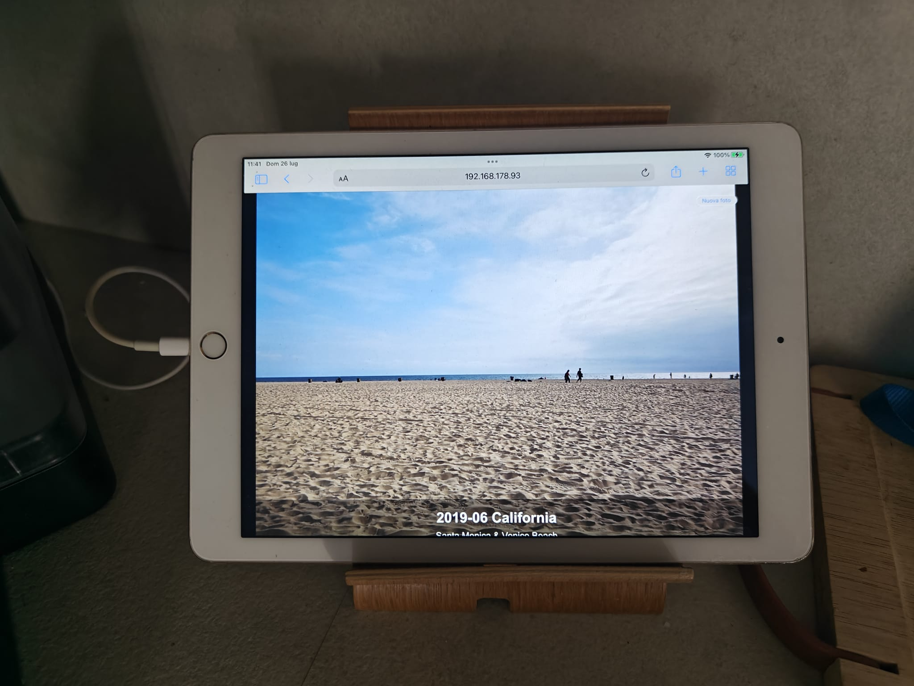

Personal Projects
Hands-on engineering projects developed during my spare time. These projects allowed me to deepen my knowledge of embedded systems, RF communications, Linux administration and software development.

Home NAS
Self-hosted storage server with automated backup, media services and Docker applications.

Home RF Station
ADS-B, AIS and SDR receiving station built around Raspberry Pi and RTL-SDR receivers.

Photo Display
Raspberry Pi powered digital photo frame with automatic catalog generation and remote updates.